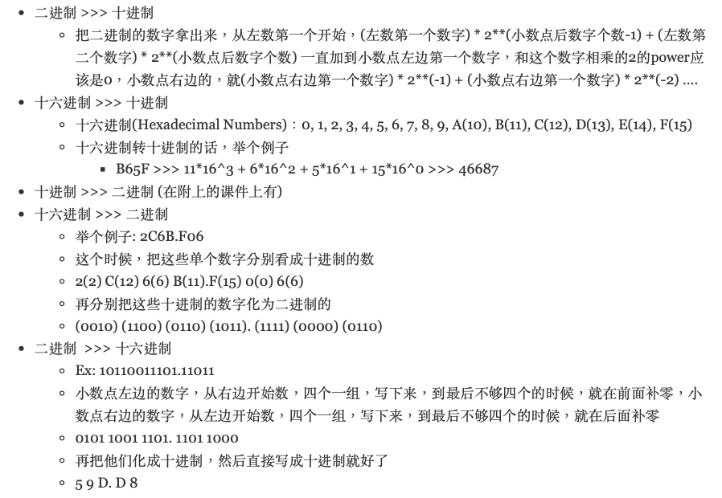

Java On Call 1
刚刚突然接到了java面试的通知，具体的时间还没有定下来。今天是周五，所以面试最快也得两天之后，趁这两天时间，根据网上的java知识导图，把java的知识全部复习（预习）一遍。首先下面列举一下需要学习/温习的知识，总共分为五大类
- Java基础知识
- 面向对象
- 常用API
- 集合I/O
- 多线程、网络编程、反射、设计模式
这里是我找到的思维导图的原地址，衷心祝愿莘莘学子可以在平时下功夫学习而不是像我这样临时抱佛脚。以上的知识点分类相当全面，我个人的话，对于第四和第五点尤其不熟悉，所以应该会花上比较多的功夫去学习。
Java基础知识
- 面向对象：是一种具有对象概念的程序变成典范。面向对象中，每一个对象应该都可以接收数据，处理数据并且将数据传达给其他的对象。
- 类和对象是一样的吗？：类和对象是不一样的，类是对某一类事物的描述，是抽象的；而对象是一个实实在在的个体，是类的实例。对象是函数、变量的集合体，而类是一组具有相同属性的对象集合体。所以按照这样子的观念来理解的话，万物皆是对象，在代码运行的时候，当某个东西实例化了一个类的时候，这个东西就变成了这个类的对象。先有类，才有类的实例：对象
- JDK(java development kit)：java开发工具包，每个写java的人都要装jdk，jdk在运行的时候，包含以下四个文件夹
- bin(其中编译器javac.exe就包含在这里面)
- include(java和JVM交互用的头文件)
- lib(类库)
- JRE(java运行环境)
- JRE(Java runtime environment)：JVM在解释class的时候需要调用解释需要的类库lib。JRE中有两个文件夹bin和lib，可以认为bin里的就是JVM，而lib中则是JVM需要的类库。把JVM和lib结合起来就是JRE。JRE中包含了JVM，JVM是java的核心部分，JRE试运行java程序不可缺少的一部分。
- JVM(Java virtual machine)：java虚拟机是整个java实现跨平台最核心的部分。记住，当我们在写java文件的时候，一个.java文件是无法被执行的，首先要先利用javac.exe去编译这个文件，.java文件会被编译成.class文件。.class文件也并不直接在机器的操作系统上执行，而是经过JVM这个虚拟机，这种类文件会在虚拟机上执行，通过虚拟机间接与操作系统交互，由虚拟机将程序解释给本地系统执行。JVM是java平台很基础很核心的部分，他通过抽象操作系统和CPU结构，提供了一种与平台无关的代码执行方式. JVM的主要工作是解释自己的指令集到CPU的指令集或OS的系统调用。

- “Write once, Run Anywhere”：这是java所倡导的标志性口号，这个标志性口号是建立在JRE上面的。java应用程序和操作系统之间增加了JRE这个虚拟层。而 Java 程序的字节码文件可以放到任意装有 JRE 的计算机运行，再由不同 JRE 的将它们转化成相应的机器代码，这就实现了 Java 程序的可移植性。
- 原码(True Form)：原码是指一个二进制数左边加上符号位后所得到的码，且当二进制数大于0时，符号位为0；二进制数小于0时，符号位为1；二进制数等于0时，符号位可以为0或1(+0/-0)。例如：00001011代表正的0001011即+11。
- 反码（One’s Complement）:反码是一种在计算机中数的机器码表示。对于单个数值（二进制的0和1）而言，对其进行取反操作就是将0变为1，1变为0。
- 补码（Two’s Complement）:是一种用二进制表示有号数的方法，也是一种将数字的正负号变号的方式，常在计算机科学中使用。他make the most significant bit a negative number. 例如：最小的signed是10000000，换算成十进制就是\( (-1)*2^{7} = -128 \)。除了那一位，其他位的运算照旧。 
- Roundoff Error: Only sum of power of 2 can be stored properly. 被电脑无法储存的部分就被成为是Roundoff Error。
- 基本数据类型：
- 整数类型：byte（1 byte:-128 to 127，short（2 bytes:-32768 to 32767），int（4 bytes:-2147483648 to 2147483647），long（8 bytes）
- 浮点类型：float（4 bytes），double（8 bytes）
- 字符类型：char（2 bytes）
- 布尔类型
- 引用数据类型：指向一个对象，不是原始值，指向对象的变量是引用变量。引用类型常见的有：String，StringBuffer，ArrayList，HashSet，HashMap等。. 注意！类和接口也算是引用数据类型。
- 数据类型之间的转换：当储存在一个类型的数据被转换成另一个类型时会发生什么
- byte > short > int > float > double
- 隐式转换发生于当位于上行的某个类型尝试转换为位于其右边的类型，此时什么事也不会发生，因为是从小到大。但是强制转换发生于某个类型尝试转换为位于其左边的类型，此时从一个容量大的数据类型转换成容量小的数据类型，会loss of precision。
- 三元运算符
expression1 ? expression2 : expression3: expression是一个布尔表达式，如果expression1是true，那么将执行/返还expression2，否则将执行/返还 expression3switch(expression) { case x: // code block break; case y: // code block break; default: // code block } - expression会被执行一次，它的值将会被拿来与各个case做比较，如果有match的花，那么其对应的代码块就会被运行
- 函数修饰符：
- public：公公控制符
- private：指定此方法只能有自己类等方法访问，其他的类不能访问（包括子类）
- protected：保护访问控制符，指定该方法只可以被它的类和子类进行访问
- final：指定该方法不能被重载(overload)
- static：指定不需要实例化就可以激活的一个方法
- synchronized：就是管层的那个！！同步修饰符，给方法加以互斥的控制
- native：本地修饰符。指定此方法的方法题使用其他语言在程序外部编写的
- 函数的重载(Method Overloading): Overloading is when a method name is used more than once in method declarations within the same class. - 当在一个class中，method的名字被多次使用，但是符合The rule is that no two methods with the same name within a class can have the same number and/or types of parameters in the method declarations. (The “NOT” rule.)这个规定的函数都被称作重载函数。
- 数组：可以存放多个相同数据类型数据的容器。当创建的时候，不同数据类型的元素会被给予默认值：
- 整数：0，浮点数：0.0，字符：’\u0000’一个空格，布尔：false，引用数据类型：null。